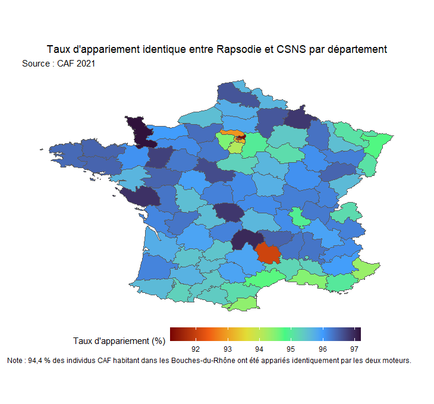
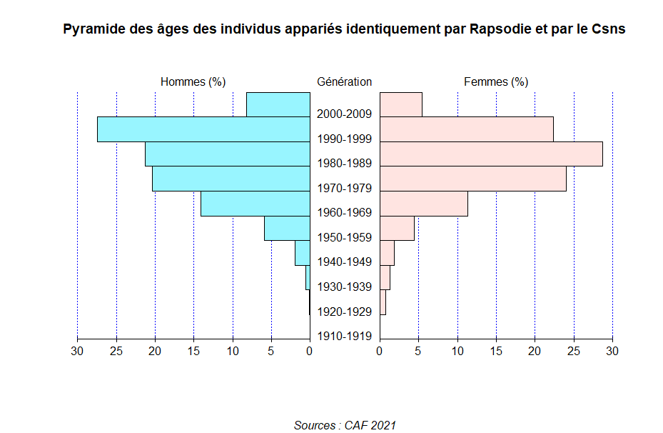
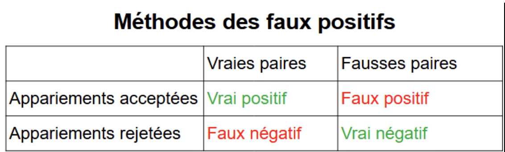

Lors de mon BUT SD à l'IUT de Paris Rives de Seine (Université Paris cité).
J'ai choisi d'effectuer ma deuxième et troisième année en alternance,
et de suivre le parcours modélisation et exploration statistique.
(Ce parcours vise à former des professionnels compétents dans le recueil, le traitement et l’analyse statistique des données.)
Au sein de ce parcours, je suis des cours très intéressants que j'apprécie beaucoup.
Par exemple, en première année, le cours de méthodes de sondage, le cours de modèle linéaire ou encore le cours d'échantillonage.
J'ai pu y réaliser deux projets :
En somme, ce parcours m'a permis de développer une compétence spécifique dans le domaine de la modélisation de données, en mettant l'accent sur l'aspect statistique.
L'INSEE
L'Institut national de la statistique et des études économiques a été créé par la loi de finances du 27 avril 1946. Il est une direction générale du ministère de l'Économie et des Finances.
Ses missions sont de collecter, analyser et diffuser des informations sur l'économie et la société française sur l'ensemble de son territoire.
Ces informations intéressent divers acteurs, par exemple les pouvoirs publics, les administrations,
les collectivités territoriales, les chercheurs, les enseignants, les étudiants et les particuliers.
Elles leur permettent d'enrichir leurs connaissances, d'effectuer des études, de faire des prévisions et de prendre des décisions.
Il est important de préciser que l'INSEE conduit ses travaux en toute indépendance professionnelle (loi de modernisation de
l'économie du 4 août 2008 qui à créer l'Autorité de la Statistique publique).
L'objectif initial de l'INSEE, était de doter la France d'un appareil d'informations démographiques et sociales conforme à ses besoins.
L'institut a depuis évolué. Malgré cela, les travaux de statistique publique y sont toujours très présents.
Par exemple, la réalisation d'études conjointement à la production statistique, la forte implantation sur l'ensemble du territoire avec
un réseau de directions régionales et d'enquêteurs ou encore une concertation étroite avec l'ensemble des utilisateurs de la statistique publique tel que le CNIS.
Mon experience à l'INSEE
Je suis arrivé en septembre 2023 à la direction générale de l'INSEE pour une durée de 2 ans.
Au sein de la direction générale de l'INSEE qui se trouve à Montrouge.
Je fait partie de la DSDS. La direction des statistiques démographiques et sociales gère le répertoire national d'identification des personnes physiques et
le fichier national des électeurs. Elle conçoit et élabore les statistiques et les études concernant la population, les ménages et
le développement social, notamment dans les domaines suivants : démographie, emploi, revenus, patrimoines, prix à la consommation, logement et conditions de vie.
Enfin, elle établit les populations légales et produit les résultats statistiques du recensement aux plans national et local.
Je travaille au sein du programme Resil
(Repertoires statistiques des individus et des logements) .
Ce programme vise à construire un système de répertoires statistiques qui consistera plus précisément en :
- 2 répertoires (individus et logements) mis à jour au fil de l’eau
- Un univers de référence consistant en trois bases annuelles (individus, logements et ménages) contenant tous les individus présents sur le territoire à une date donnée
- Trois services : accueil des sources externes, production de l’univers de référence et production de fichiers enrichis par appariement.
Cela permet de réaliser des études statistiques à un niveau géographique détaillé (l’échelle d’un quartier, d’une ville ou d’un département par exemple),
en étant assuré que toutes les personnes et tous les territoires sont bien pris en compte.
Les 2 listes qui composent Résil, celle des personnes et celle des logements, lui ont donné son nom : le Répertoire statistique des individus et des logements.
La combinaison de ces 2 éléments permet à Résil d'être une base de référence pour mener des études approfondies sur de nombreux sujets nécessitant
la mise en relation d'informations dispersées. Cela s'appelle "apparier des données". Apparier des données consiste à
relier plusieurs sources autour d'une réference commune pour en tirer de nouvelles informations.
Mes missions
Mon rôle est de mener des travaux d’appariement en comparant non seulement les données individuelles de la base de sondages actuelle avec celles produites par Résil
pour les années 2023 et 2024, mais aussi de comparer cette base Résil aux résultats du recensement de la population.
L’objectif est d’avoir le diagnostic le plus précis quant à la qualité de couverture de la base de sondage
produite par Résil. Ces résultats pourront également permettre, le cas échéant, de corriger le modèle d’appariement des sources administratives à l’origine
de la constitution de la base de sondages.
Concrètement, ma première mission à été de comparer deux outils d'appariements. Ces deux moteurs d'appariements sont construits de manière différente et ont apariés chacun deux fichiers
de données. L'objectif à été de mesurer lequel des ces deux outils fait le moins d'erreur d'appariement afin d'orienter le choix du programme Resil.
Les fichiers appariés sont un fichier de la caisse d'allocation familiale avec un fichier des finances publiques.
Tout d'abord, j'ai nettoyé les données que j'ai reçues. Par exemple, j'ai créé de nouveaux identifiants, modifié les types des variables, supprimé les valeurs manquantes et les doublons.
Ensuite, j'ai pu réaliser des appariements entre les résultats obtenus par les deux moteurs, en utilisant à la fois des identifiants et des données nominatives (nom, prénom, date de naissance).
Cela m'a permis d'obtenir 4 sous-population :
-
Les individus appariés de la même manière par les deux outils
-
Les individus appariés uniquement par l'outil A
-
Les individus appariés uniquement par l'outil B
-
Les individus appariés par aucun des deux outils
Pour chacune de ces sous-populations, j'ai réalisé des statistiques sur l'âge des individus, leur département de naissance, ainsi que sur leurs indicateurs de qualité d'appariement.
J'ai également tenté de comprendre pourquoi ces individus n'ont pas été appariés à chaque fois. Est-ce un problème d'identifiants ?
Est-ce parce que les individus figurent dans le fichier de la CAF mais pas dans celui des impôts, par exemple ?
Voici un exemple de réalisation graphique que j'ai pue réalisé :


À ce stade, nous pouvons calculer un taux d'appariement, qui correspond à la proportion de correspondances réussies entre nos deux fichiers de données.
L'outil A a atteint un taux d'appariement de 99,7 %, tandis que l'outil B a obtenu 99,2 %.
Cependant, il est possible que l'outil A ait commis plus d'erreurs que l'outil B. Les erreurs d'appariements peuvent survenir pour plusieurs raisons.
Les données peuvent contenir des fautes de frappes, des doublons, il peut égaleemnt y avoir un changement dans les informations personnelles.
Par exemple, un changement d'adresse pour un individu entre les deux fichiers.
On mesure donc un taux de faux positifs pour chaque méthode. C'est une méthode qui consiste à identifier et à évaluer les correspondances incorrectes
lors de l'appariements. Un faux positif se produit lorsque deux enregistrements sont appariés, mais ne devraient pas l'être car ils ne représentent pas la même entité.

Pour ce faire, j'ai dû estimer ce taux en utilisant l'une des sous-populations mentionnées ci-dessus. J'ai construit un échantillon aléatoire de 500 individus. Pour qu'il soit représentatif de ma population,
j'ai constitué plusieurs strates correspondant à l'indicateur de qualité des individus. Avec 5 niveaux de qualité, j'ai sélectionné 100 individus par niveau de qualité pour ensuite réaliser une analyse visuelle.
L'analyse visuelle consiste à annoter plusieurs paires manuellement de manière visuelle, en déterminant concrètement si l'appariement est correct ou incorrect, et si le moteur a réussi ou non cet appariement.
On peut ensuite estimer le taux d'erreur pour chaque outil et les comparer.
L'outil A à un taux d'erreur plus élevé que l'outil B malgré l'inverse au niveau du taux d'appariement. Donc il était important de ne pas se baser uniquement sur le taux d'appariement.
Conclusion de la mission
Au cours de cette mission, j'ai eu l'occasion de manipuler de gros volumes de données, ce que je n'avais jamais fait auparavant.
Par exemple, j'ai travaillé sur des fichiers comportant jusqu'à 20 millions de lignes. Ces données étaient non structurées, ce qui m'a permis de développer mes compétences dans la
manipulation de ce type de données.
J'ai créé plusieurs programmes en utilisant R, ce qui m'a permis de progresser dans la réalisation de différents types de graphiques et de visualisations.
Enfin, j'ai rédigé une note diffusée au sein de l'Insee pour présenter les méthodes que j'ai utilisées ainsi que les résultats obtenus.
J'ai commencé ma seconde mission qui consiste à mesurer la qualité de la couverture de deux fichiers de données.
Deuxième mission
En cours de réalisation...